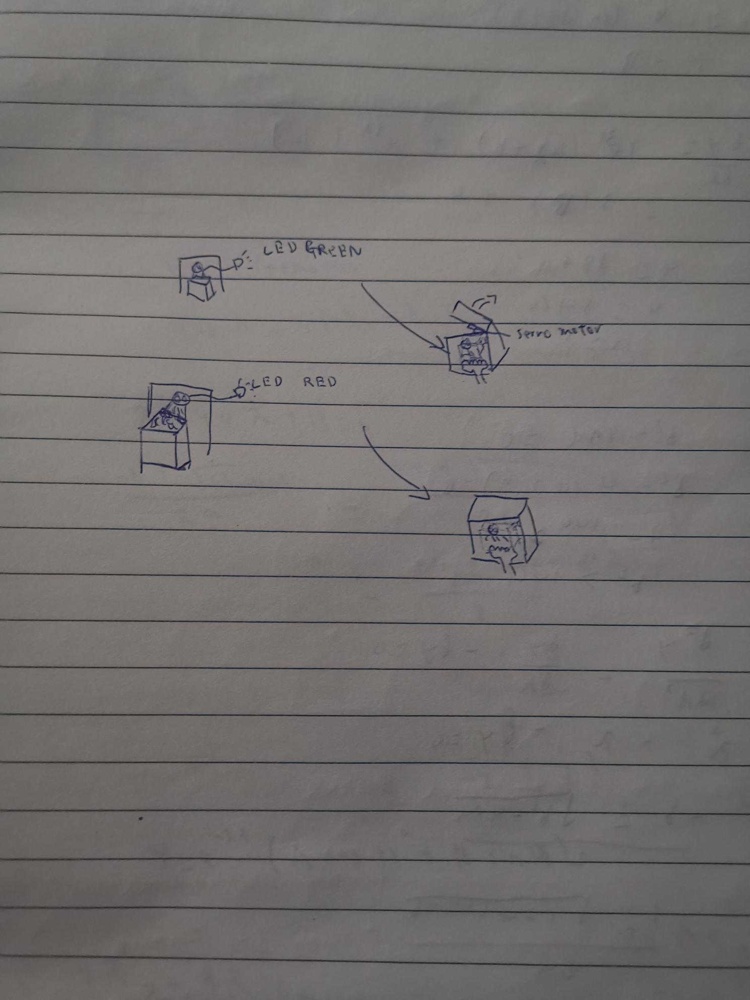
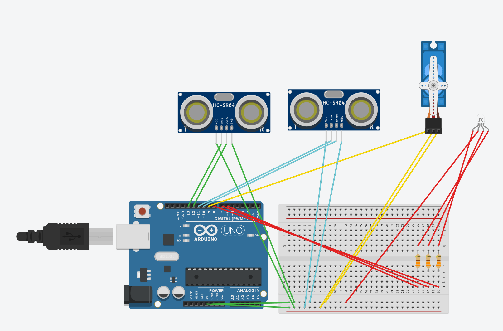
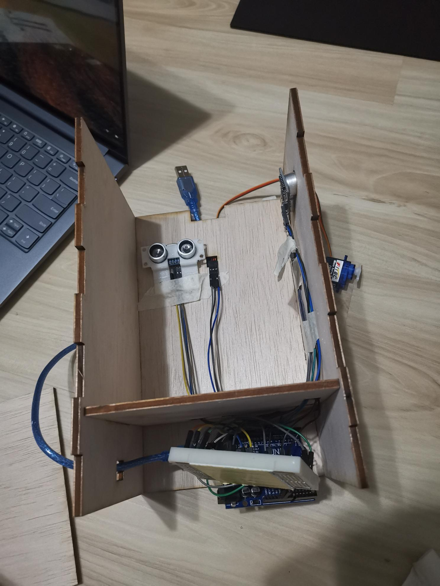
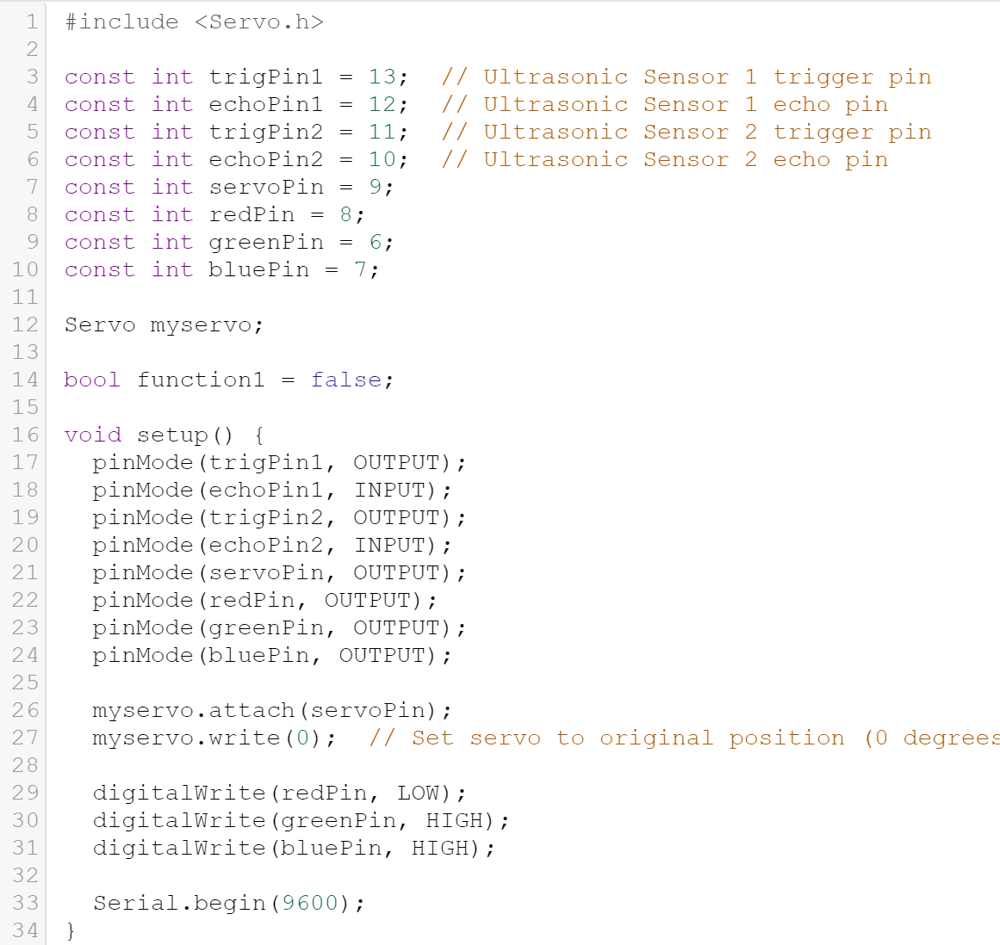
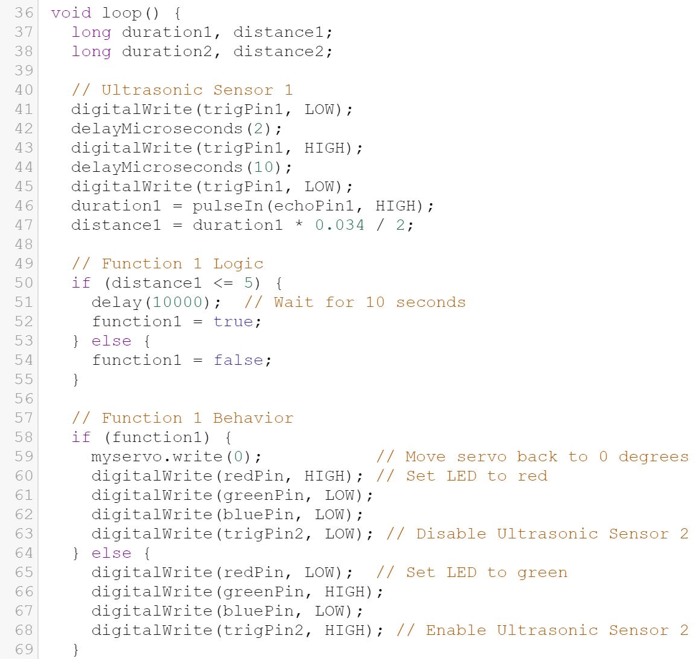
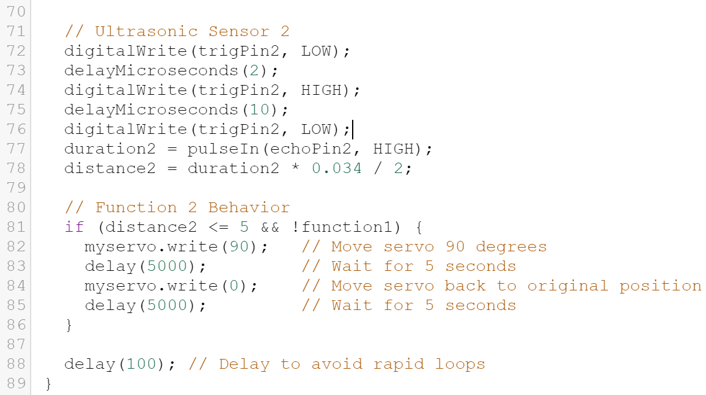
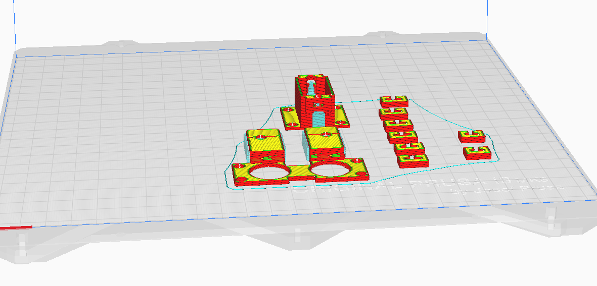
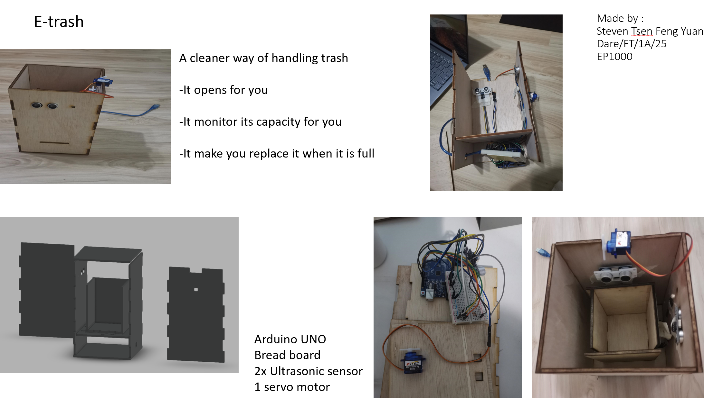

Final Project
My plan for this project is to make a dustbin that will open for you when you wave it infront.
It will monitor the dustbin capacity and will warn you when it is full

Circuit set up
What is required:2 Ultrasonic sensor ,1 RBG LED and 1 servo motor


Coding
To avoid confusion i will diffrentiate 2 ultrasonic sensor name with ultrasonic sensor 1 and 2.
Sensor 1 is resposible with dustbin capacity and sensor 2 is reponsible with detection of hand movement.

Set up of all sensors ,REB LED and servo motor.

This make it so sensor 1 will detect anything above dustbin ,if it is overflow ,it will be triggered and set function = true
If not ,it will = false. Function make sure the device function base on weather the dustbin is overflow
If function = true ,sensor 2 will be disabled, LED RGB will be red and servo motor return to the original position
If function = false ,sensor 2 will be active and LED RGB will be green.

Lastly sensor 2 function ,it is to detect anything within 5cm (like hand wave),if it dose ,servo motor will move 90 degree (to open the lid)
There will be 5 second delay before it servo motor move back to its original position
3D print

This is the holder of the ultrasonic sensor so it will be able to placed it against the wall
I unfortunatly did not use the others (wire holder and servo motor holder) as i can use tape since its more efficient
Laser cut
Problem ,there are 3 main problem
1,the location of the circuit is too small (fixed)
2, servo motor hand could not pick up anything (no lid ,not fixed)
3, code is not working properly (not fixed)
Project slide
